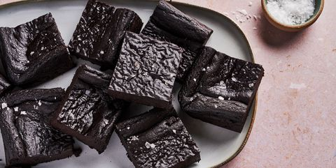

KETO BROWNIES
Prep time:1 hours 25 mins
Yield: 16
Ingredients
Steps
- Preheat oven to 350° and line a 8”-x-8” square pan with parchment paper. In a blender or food processor, combine all ingredients except flaky sea salt and blend until smooth.
- Transfer batter to prepared baking pan and smooth top with a spatula. Top with flaky sea salt, if using.
- Bake until brownies are soft but not at all wet to the touch, 25 to 30 minutes.
- Let cool 25 to 30 minutes before slicing and serving.